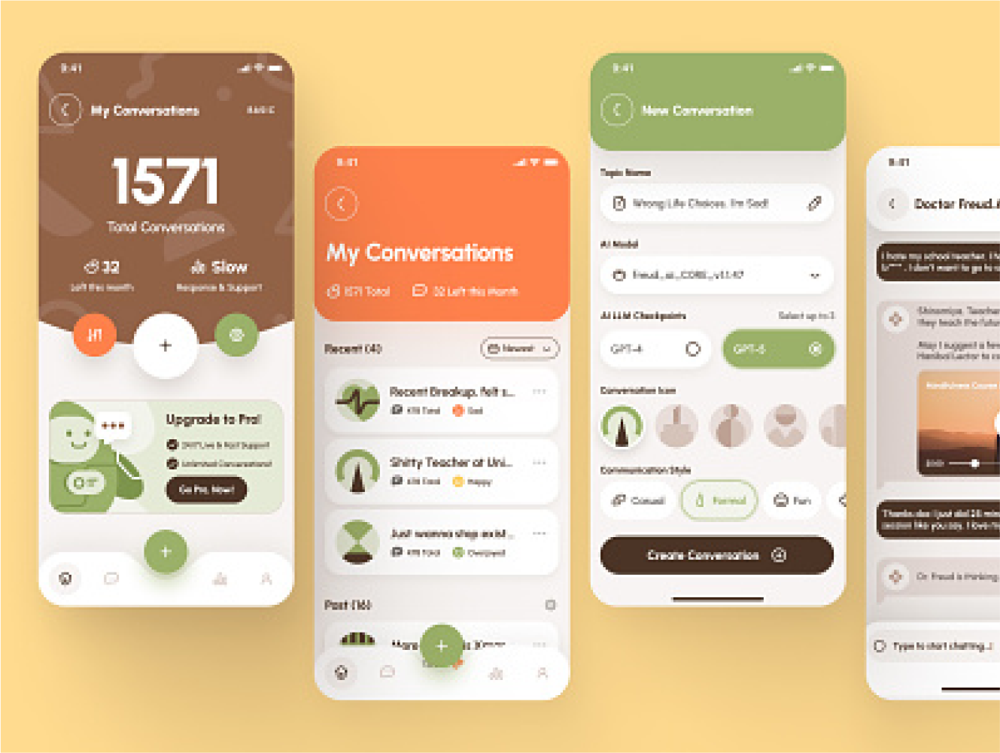

Developed a python chatbot that integrates API to have an ongoing
conversation with users, using the open ai API to create an assistant
that automatically creates an assistant and message thread model to
generate ongoing conversation retrieving and passing data through the
API endpoints. Deploying as web app which serves the same purpose as
the known chatgpt. I used both open ai and huggingchat API to
implement this theory.